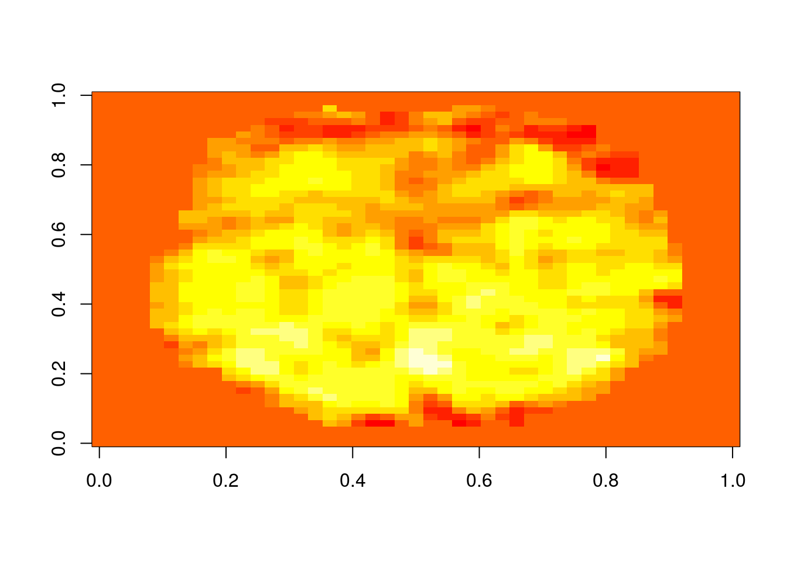

Observações: Movimentação de corpo rígido:
\[ \begin{align} BOLD_{t} = \alpha + \beta . X_t + (\gamma_1\mu_1 + ...+\gamma_6 \mu_6) + \epsilon_t && \text{(sendo } X_t \text{ a condição da convolução)} \end{align} \]
Neste caso, \(\gamma_1\mu_1 + ...+\gamma_6 \mu_6\) é a combinação do ajuste de corpos rígidos para ajuste de movimento. São 6 eixos (3 de rotação e 3 de translação). São utilizados pois muitas coletas de fMRI são realizadas com movimento (fala, movimento da mão ou com alguma tarefa que pode gerar movimentação). Alguns pesquisadores sugerem 12 movimentos, que seriam os 6 usuais utilizados e suas derivadas para correção.
Em event-related, além da condição convoluída pela HRF, inclui também suas derivadas.
Se quiser sofisticar a análise com mais acurácia, realizamos os ajustes:
\[ \begin{align} BOLD_{t} = \alpha + \beta_1 . X_t + \beta_2. X_t' + \epsilon_t && \text{(sendo } X_t' = X_t - X_{t-1} \text{)} \end{align} \]
A adição de Kernels de Volterra:
\[ \begin{align} BOLD_{t} = \alpha + \beta_1 . X_t + \beta_2. V_t' + \epsilon_t && \text{(sendo } V_t \text{ os kernels de Volterra)} \end{align} \] E no caso dos testes estatísticos de ativação, trabalharia com o \(\beta_1\)
\[ \begin{align} Y_{t} = \alpha + \beta . X_t + \epsilon_t \end{align} \]
neste caso, supondo: \(\epsilon_t\) com média zero e variância constante (homocedasticidade) e os erros \(\epsilon_t\) são independentes
3.1 Pre-whitening: Aplicação de modelo autoregressivo 3.2 Estimação não-paramétrica e semi-paramétrica: Descobrir independência dos resíduos 3.3 Pre-coloring (AR) - Força os resíduos a ter a dependência desejada/conhecida que seja compatível com o modelo estatístico.
Um conjunto de dados fMRI, pode ser visto como um conjunto de elementos cubóides (isto é, voxels) de dimensão variável, cada qual explicados por uma série temporal associada de tantos pontos de tempo quanto os volumes adquiridos por sessão.
O objetivo de uma análise estatística (convencional) é determinar quais voxels têm um curso de tempo que se correlaciona com algum padrão conhecido de estimulação ou manipulação experimental. O primeiro passo na análise de dados de ressonância magnética funcional é aplicar uma série de transformações de “pré-processamento” com o objetivo de corrigir vários artefatos potenciais introduzidos na aquisição de dados. Cada transformação pode ser aplicada conforme necessário, dependendo do projeto experimental específico ou protocolo de aquisição. As etapas mais típicas incluem o ajuste de diferenças no tempo de aquisição de fatias de imagem individuais, correção do movimento do assunto, distorção dos dados de indivíduos individuais em um espaço comum (“normalização”) e suavização temporal e espacial (ver Jezzard et al., 2002). Após o pré-processamento, a análise de dados é geralmente realizada em duas etapas: uma análise de primeiro nível separada dos dados de cada indivíduo, seguida de uma análise de segundo nível na qual os resultados de vários assuntos são combinados.
As etapas de: * coleta de dados * pré-processamento * 1st level * e/ou 2nd level
Onde as análises são feitas em dois tipos:
O objetivo da análise estatística de primeiro nível é determinar o quão grande é a contribuição de cada variável preditora \(x_i\) para os valores observados de \(y\) em um único indivíduo. Isto é, o tamanho de cada parâmetro de escala \(\beta_i\) e se é significativamente diferente de zero.
Seja no primeiro nível a implementação do GLM:
\[ \begin{align} Y_{t} = \beta . X_t + \epsilon_t \end{align} \]
onde, \(Y\) é um vector de coluna \(n × 1\) representando a série temporal do sinal BOLD associada a um único voxel. X é a matriz design \(n × p\), com cada coluna representando uma variável de previsão diferente.
A abordagem padrão para a análise de fMRI é ajustar o mesmo modelo de forma independente ao tempo de cada voxel. A covariância espacial entre voxels vizinhos é, portanto, tipicamente ignorada no estágio de ajuste do modelo. A presença de mais variáveis de resposta (isto é, voxels) do que observações (ou seja, volumes), juntamente com o objetivo de fazer afirmações topograficamente específicas sobre a atividade BOLD, tem tradicionalmente motivado essa abordagem “massiva-univariada”.
As análises 2nd level se dividem em fixed effects (conclusões nos indivíduos que participaram do estudo) ou mixed effects/random para conclusões de onde os indivíduos foram amostrados. Em mixed effects, utiliza-se um grupo para amostrar um comportamento de uma população.
Na análise de grupo, podemos aplicar diversos testes de hipóteses, como teste \(\lambda^2\) (chi-quadrado), teste-T, correlação de Pearson. Com o GLM, é possível fazer parte destes testes.
\[ \begin{align} Y_{i} = \alpha + \beta_1 . X_i + \beta_2.Z_i+... + \epsilon_t \end{align} \] supondo: \(\epsilon_t\) com média zero e variância constante (homocedasticidade) e os erros \(\epsilon_t\) são independentes
Exemplo: Suponha que para um voxel X, Y, Z temos os \(\beta\)’s de uma condição experimental para N indivíduos. Como testar se na população de onde os N indivíduos foram amostrados se o \(\beta > 0\)?
Para N-indivíduos, terei N cérebros para analisar. Para cada indivíduo tenho um \(\beta_i\) atribuído a cada um:
\[\begin{align}= \begin{bmatrix} \\ \beta_1 \\ \beta_2 \\ ... \\ \beta_n \end{bmatrix} \end{align}\]Para testar se esse \(\beta\), basta testar com teste-T se o \(\alpha>0\) considerando o modelo de $ Y = + _t$ (\(\epsilon\) com média zero):
\[\begin{align} Y = \begin{bmatrix} \\ \beta_1 \\ \beta_2 \\ ... \\ \beta_n \end{bmatrix} \end{align}\]e
\[\begin{align} X = \begin{bmatrix} \\ 1 \\ 1 \\ ... \\ 1 \end{bmatrix} \end{align}\]Isso é equivalente a um teste T para uma amostra.
Por exemplo sejam as matrizes:
\[\begin{align} X = \begin{bmatrix} Controle \\ \beta_1 \\ \beta_2 \\ ... \\ \beta_n \end{bmatrix} \end{align}\]e pacientes:
\[\begin{align} X = \begin{bmatrix} Pacientes \\ \beta_1 \\ \beta_2 \\ ... \\ \beta_n \end{bmatrix} \end{align}\]O modelo de GLM utilizado é:
\(Y_i = \beta_1.C_i + \beta_2.P_i + \epsilon_t\) note que não há intercepto \(\alpha\)
e: \(Y_i\) é o coeficiente de ativação do indivíduo:
\(i=\) {1, 2, …, \(N_c\), \(N_c\), …, \((N_c+N_p)\)
\(C_i=1\) se o indivíduo \(i\) é controle e zero caso contrário \(P_i=1\) se o indivíduo é paciente e zero caso contrário
\[ Y= \left(\begin{array}{cc} \beta_1^c \\ \beta_2^c \\ ... \\ \beta_N^p \end{array}\right), X= \left(\begin{array} 1 1 & 0\\ 1 & 0 \\ 1 & 0 \\ ... & ...\\ 0 & 1 \\ 0 & 1 \\ 0 & 1 \\ \end{array}\right) \]
Considerando a base a qual os 37 primeiros indivíduos são controles saudáveis e os demais são pacientes com Parkinson.
Implementando no R:
#Leitura de biblioteca
require(AnalyzeFMRI)## Carregando pacotes exigidos: AnalyzeFMRI## Carregando pacotes exigidos: R.matlab## R.matlab v3.6.1 (2016-10-19) successfully loaded. See ?R.matlab for help.##
## Attaching package: 'R.matlab'## The following objects are masked from 'package:base':
##
## getOption, isOpen## Carregando pacotes exigidos: fastICA## Carregando pacotes exigidos: tcltk## Carregando pacotes exigidos: tkrplot#Leitura dos dados
betas = f.read.volume("grupo37C-P.nii")
dim(betas)## [1] 45 54 45 92# imagem axial do décimo individuo:
#imagem axial (z=20) do decimo individuo na fatia 20
image(betas[,, 20, 10])
Para um único voxel 20, 20, 20:
Y = betas[20, 20, 20,]
X = matrix(0, 92, 2)
# Como 1: 37 são controle e do 38:92 são pacientes:
# Variável dummy para controles
X[1:37, 1] = 1
# Variável dummy para pacientes:
X[38:92, 2] = 1Ajustando o modelo - GLM:
#Ajustar o GLM
#o -1 na formula serve para tirar o intercepto
modelo = lm(Y~-1+X[, 1] + X[, 2])
summary(modelo)##
## Call:
## lm(formula = Y ~ -1 + X[, 1] + X[, 2])
##
## Residuals:
## Min 1Q Median 3Q Max
## -0.50669 -0.15868 -0.03905 0.09441 1.15112
##
## Coefficients:
## Estimate Std. Error t value Pr(>|t|)
## X[, 1] 0.48435 0.04685 10.34 <2e-16 ***
## X[, 2] 0.44014 0.03843 11.45 <2e-16 ***
## ---
## Signif. codes: 0 '***' 0.001 '**' 0.01 '*' 0.05 '.' 0.1 ' ' 1
##
## Residual standard error: 0.285 on 90 degrees of freedom
## Multiple R-squared: 0.7256, Adjusted R-squared: 0.7195
## F-statistic: 119 on 2 and 90 DF, p-value: < 2.2e-16Se olhar o \(\beta_1\) são as variáveis do grupo controle e \(\beta_2\) do grupo de pacientes.
Analisando o teste de hipóteses e a ativação dos respectivos controles. Para ativação \(beta_1 > 0\). Olhando o resultado vemos que o p-valor é muito pequeno, portanto, os controles ativam nesse voxel. O mesmo vale para o grupo de pacientes.
Para entender se o controle ativa MAIS que o de pacientes: \(\beta_1 > \beta_2\). No R esse teste não é tão simples de se verificar.
\(Y_i = \alpha + \beta_2.P_i + \epsilon_t\) \(P_i=1\) se o indivíduo é paciente e zero caso contrário
Para controles: \(Y_i = \alpha + \epsilon_i\)
Para pacientes: \(Y_i= \alpha+ \beta + \epsilon_i\) \(\beta\) é o incremento na média em relação aos controles.
Neste caso:
\[ Y= \left(\begin{array}{cc} \beta_1 \\ \beta_2 \\ ... \\ \beta_{(N_c+N_p)} \end{array}\right), X= \left(\begin{array} 1 1 & 0\\ 1 & 0 \\ 1 & 0 \\ ... & ...\\ 1 & 1 \\ 1 & 1 \\ 1 & 1 \\ \end{array}\right) \]
Implementando para o mesmo voxel 20,20,20:
### METODO GRUPO DE REFERENCIA
#Neste caso sera o controle
#Observacao: os 37 primeiros indiv
#sao controles saudáveis e os demais
#sao pacientes com Parkinson
#GLM
Y = betas[20, 20, 20,]
X = matrix(0, 92, 2)
#Intercepto
X[, 1] = 1
#Variavel dummy para Pacientes
X[38:92, 2] = 1
#Ajustar o GLM
modelo = lm(Y~X[, 2])
summary(modelo)##
## Call:
## lm(formula = Y ~ X[, 2])
##
## Residuals:
## Min 1Q Median 3Q Max
## -0.50669 -0.15868 -0.03905 0.09441 1.15112
##
## Coefficients:
## Estimate Std. Error t value Pr(>|t|)
## (Intercept) 0.48435 0.04685 10.34 <2e-16 ***
## X[, 2] -0.04421 0.06060 -0.73 0.468
## ---
## Signif. codes: 0 '***' 0.001 '**' 0.01 '*' 0.05 '.' 0.1 ' ' 1
##
## Residual standard error: 0.285 on 90 degrees of freedom
## Multiple R-squared: 0.00588, Adjusted R-squared: -0.005166
## F-statistic: 0.5323 on 1 and 90 DF, p-value: 0.4675Analisando especificamente para esse voxel, como \(\beta<0\) é como se o grupo de pacientes possui uma ligeira ativação menor que o grupo de controle, Mas ao verificar o p-valor, pode-se verificar que não é significante.
Para análise dos mapas, analisamos mais o t-valor.
Fazendo a varredura para todos os voxeis intracranianos (análise de grupo de referência):
#GLM em todos os voxels intracranianos
MAPAT = array(0, c(45, 54, 45, 1))
for(xi in 1:45){
for(yi in 1:54){
for(zi in 1:45){
if(betas[xi, yi, zi, 1] != 0){
Y = betas[xi, yi, zi, ]
X = matrix(0, 92, 2)
#Intercepto
X[, 1] = 1
#Variavel dummy para Pacientes
X[38:92, 2] = 1
#Ajustar o GLM
modelo = lm(Y~X[, 2])
#Estatistica T do paciente vs controle
MAPAT[xi, yi, zi, 1] = summary(modelo)$coef[2, 3]
}#fecha if
}}}#fecha o for do xi,yi,zi
#Salva os mapas em arquivos no formato Analyze (IMG/HDR)
f.write.analyze(MAPAT, "MapaControlevsPaciente",
pixdim = c(4, 4, 4),
originator = c(23.5, 32.5, 19, 1, 1))